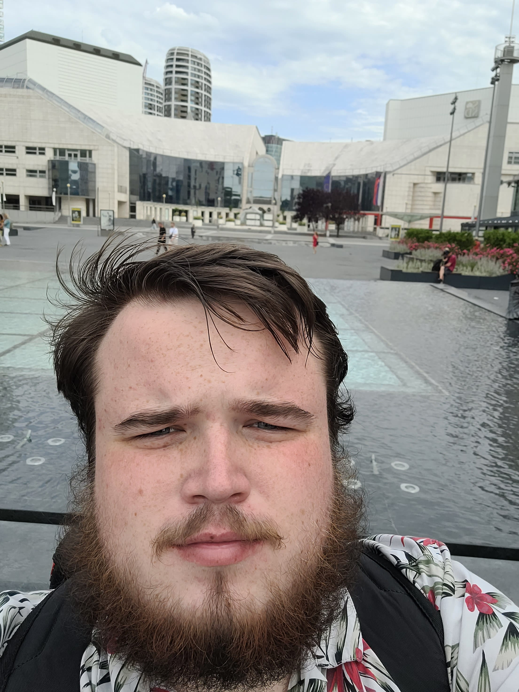

Kto som
Ahojte, volám sa Šimon Grinč a som študent Aplikovanej informatiky na FEI STU.
Mám zameranie Modelovanie a simulácia udalostných systémov, bavia ma projekty, kde sa niečo nové naučím.
Tento semester by som chcel dokončiť bakalárku a ďalší rok si nájsť prácu v odbore.
- Programujem v C#
- Zaujímajú ma genetické algoritmy
- Nemám rád MatLab